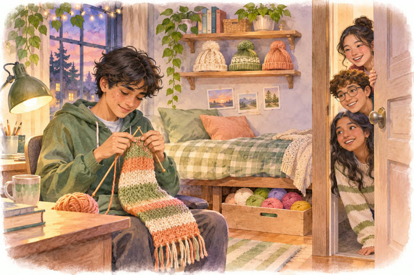

Listen to the text
Speed:

Everybody in my class has a cool hobby. Stas does parkour. Ruslana plays the drums. Even quiet Petro flies drones. For two years I had a hobby too, and for two years I told nobody about it. I was sure that people would laugh. I knit. It started when I was twelve and spent a month at my grandmother's in the village. It rained every day, there was no internet, and I was bored to death. Grandma put two needles and a ball of red wool into my hands. "Your grandfather could knit," she said. "He learnt it in the army. Sit down." My first scarf was terrible. It was narrow at one end and wide at the other. But I liked the quiet clicking of the needles and the way a long thread slowly turned into something warm. By the end of the month I had made a hat for Grandma and socks for myself. At home I went on knitting in secret. I watched video lessons at night and hid the wool under my bed. When friends came, I told them that the hat on my shelf was a present. A fourteen-year-old boy with knitting needles? No, thank you. My secret came out by accident. Last winter our class collected warm things for an animal shelter. I brought six small blankets for the kittens. "Where did you buy them?" asked our teacher. I didn't want to lie. "I made them," I said and waited for the laughing. Nobody laughed. Stas took a blanket and looked at it for a long time. "Can you make a hat with a skull on it?" he asked. Ruslana wanted covers for her drumsticks. Petro asked for gloves without fingertips, so that he could fly his drone in winter. Now I have more orders than free time. I have learnt to knit patterns, letters and even a small dinosaur. Last month I started a knitting club at school. Nine people came, and four of them were boys. I often think about those two years. I lost so much time being afraid! A hobby doesn't have to look cool. It is cool when you are really into it. And if somebody laughs, you can always knit them a scarf. A narrow one.
Tap any sentence to hear it again.
Сподобалось? На сайті ще більше матеріалів для вчителів!
Reader, презентації, ігри, діагностичні та контрольні роботи до підручників 1-11 класів.
Перейти на сайт materials.allaenglish.com